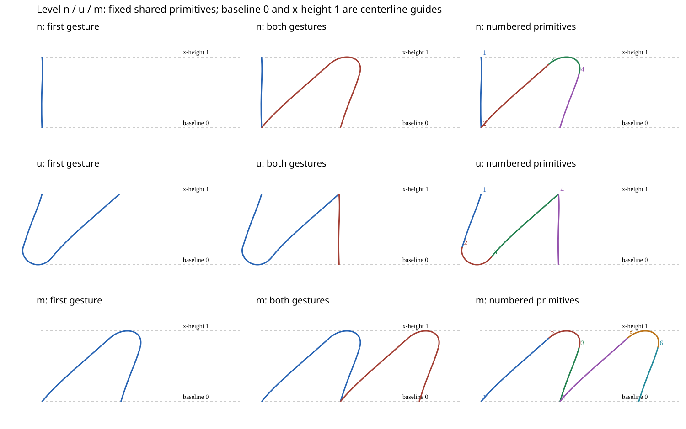

HANDVALIDATE-020 · frozen synthetic n / u / m · no context or fatigue
The alignment repair levels the construction. This review asks a different question: whether its shapes, slant, proportions and joins match your intended style.
Owner appearance verdict: pending. A mechanical pass is not approval of these letterforms. The analytic targets on the right are comparison constructions—not historical references or an authoritative style. No S2, context-training or real-hand acceptance is granted here.
Protocol and results · Pending review record · Mechanical report · Earlier before/after workbook
Blue guides mark centerline baseline and x-height, not the edges of the broad nib. All letters use the same physical display scale. Native 900-DPI evidence is linked below each panel.
For each letter, say keep or repair, and name the feature that matters:
Example feedback: “n: repair the slant; u: keep the turn but narrow it; m: keep the level arches.” This is an example, not a recommended verdict.
No reference style has been approved in this sheet. If your verdict depends on matching a particular hand, identify that reference before any new geometry or target experiment.

These are the unchanged frozen candidate's paths. A repair should target a shared stroke or assembly rule, not redraw separate letters or tune the metric to make an unwanted style pass.
| Coverage | Boundary |
|---|---|
| Exact isolated rotated underturn / overturn | Base, finer arc, finer time and source-subdivision checks. |
| Exact n/u/m plus a placed mu regression | Base, finer arc and finer time. Whole-letter subdivision exceeds the unchanged reference cap and is not claimed. |
| Numerical and physical checks | Unchanged target version and thresholds; preserved source and replay evidence. See the machine report for the actual outcome. |
| Human appearance, historical reading, S2 and context | Not approved. Fatigue and contextual adaptation remain untouched. |
Isolated rotated underturn · Isolated rotated overturn · Full-frame mu placement regression · Negative-control detections